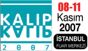

|
08 - 11 Kasým 2007 tarihleri arasýnda, Ýstanbul Fuar Merkezi'nde düzenlenen 3. Ýstanbul Kalýp Fuarý baþarý ile gerçekleþtirildi.
BEYSAD (Beyaz Eþya ve Yan Sanayicileri Derneði) Baþkan Vekili Hasan Danýþment, TÜMSÝAD (Tüm Sanayici ve Ýþadamlarý Derneði) Baþkan Yrd. Halit Kanak ve ev sahibi sýfatýyla da Ýhlas Holding Yönetim Kurulu Baþkan Yardýmcýsý Yavuz Özgün'ün açýlýþýný yaptýklarý Fuar'da, Türkiye'nin önde gelen kalýp markalarý ürünlerini ve uygulama örneklerini sergilediler.
Konusunda Türkiye'nin ilk ihtisas fuarý olan 3. Ýstanbul Kalýp Fuarý, 145 katýlýmcýnýn iþtirak ettiði ve toplam 20.172 ziyaretçinin takip ettiði profesyonellerin buluþtuðu bir arena oldu.
3. Ýstanbul Kalýp Fuarý'nýn en önemli özelliði ve farký, kalýp üreticileri ile ana ve yan sanayi dallarýný buluþturmasý olmuþtur.
Fuar'da aþaðýdaki ürünler sergilendi:
Kesme Kalýplar, Friksiyon Kalýplar, Pres Kalýplar, Metal Enjeksiyon Kalýplarý, Termoform Kalýplar, Sývama Kalýplar, Plastik Kalýplar, Þiþirme Kalýplar, Model Kalýplar, Kauçuk Enjeksiyon Kalýplar, EPS Kalýplar, Sac Metal Kalýplar, Döküm Kalýplar, Dövme Kalýplar, Cam Kalýplar, CAD-CAM Sistemler, Kalýp Parlatýcýlarý, Mühendislik-Danýþmanlýk, Ek Parçalar ve Diðer. Ayrýca kalýp imalatýnda kullanýlan tüm Makineler, Tezgahlar, Kimyasallar, Hammaddeler, Bilgisayar ve Programlarý, Baðlantý Elemanlarý, Takým Tutucular, Sistemler, Elemanlar ve Malzemeler.
Katýlýmcý firmalar ve stand krokileri:
|
|
9. Salon / Hall |
10. Salon / Hall |
Daha büyük görmek için krokilerin üzerini týklayýnýz
Katýlýmcý Listesi |
2M Makine Mümessillik
Abigem Kocaeli
AAT - TÜRK 3 Boyutlu Ölçüm Yazýlým
Adým Yayýncýlýk
Alpress Kalýpçýlýk
A Kalýp Teknolojileri
Adil Makine ve Kalýp Sanayi
Ajans Mik
Anatomi Terapi
Ajans Organize
Akmetal Metalurji
Alba Kalýp Sanayi
Alýcýlar Makine
Aliaða Organize Sanayi Bölgesi
Albaksan A.Þ.
Alper Isýl Ýþlem
Altek Metal
Altes
Ana Yayýncýlýk
Arc Dizayn
Ares Dýþ Ticaret
Armada Yazýlým
Armeda Hýrdavat
Aroymak Çelik
Arprom
Asrýn Plastik Kalýp Sanayi
Aybak Kalýp
Ayhan Demir Çelik
Beksan Teknik
Beyazay Kalýp
Býçkýcý Kalýp
Bimex International
Bilge Mühendislik
Bilgi Teknik Hýrdavat
Bileþim Tanýtým Hizmetleri
Birleþik Metal ve Isýl Ýþlem
Bursa Kalýp Merkezi
Bodycote & Istaþ Isýl Ýþlem
Boru Dergisi
Cad House Kalýp
Cemal Metal Alaþýmlarý
Çað CAD/CAM
Çaðdaþ Makine
Çalýþ Ticaret
Çelik Metal
Dalgýç Kalýp
Defne Mühendislik
Delta Kalýp Elemanlarý
Demir Çelik Store Dergisi
Dijital Teknik Dergisi
DKS Silver Paint
Dünya Kalýp |
Efaþ Kalýp Parlatma
Eksen Plastik Kalýp
Elma Plastik ve Kalýp
Emlak Pazarlama Ýnþaat
Emek Ekzantrik Pres Makine
Emo Makine Market Dergisi
Enka Plastik ve Kalýp
Er-El Makine
Era Metalurji
Erkoç Kalýp
Expoturkish.com
Eylül Yayýncýlýk
Factor H Automation
Fetih Plastik ve Kalýp
Form Makine
Furkan Mühendislik
Gemini Mühendislik
Güvenal Teknik Hýrdavat
Güvanal Makina
GNY Kalýp ve Makine
Güçler Plastik
Güner Plastik
Hat Teknik
H + P
HMD Kalýp
Hi - Tech Dergisi
Isýtek Rezistans
ÝES Ýstanbul Elektronik Sanayi
ÝnfoTRON A.Þ.
Kardeþler Kalýp ve Plastik
Kalýp Destek
Kalýpyansan
Kalýp ve Teknolojileri Dergisi
Kompozit Ürünleri Dergisi
Köksal Otomotiv
Lazermikron
Lider Rezistans
Matbaa & Teknik Dergisi
Marmara Isýl Ýþlem
Marmara Yazýlým
Medikal Teknik Dergisi
Medya Analiz Yayýn Grubu
MD Kalýp Makine
Mikro Sert Makine
Mim Ajans
Mold Türkiye
Nalbur Teknik
Orsiad
O.R. Lasertechnologie |
Pagev & Pagder
Pehlivan Bilgisayar ve Kalýp
Presstrade GmbH
Plastpack
Plate House
PP Pack Plast Dergisi
Protec Medikal Plastik ve Otomasyon
RAM Pasific Ltd.
Ramateks Metal Sanayi
Referans Metal
Saðlam Metal
Saðlam Medikal Sistemler
Samet Teknik Hýrdavat
Sema Plastik Kalýp ve Makine Sanayi
Seçkin Kalýp
Seçkin Teknik Hýrdavat
Seykoç Alüminyum
Steady Stream Business Co., Ltd.
Sinerji Yayýncýlýk (TurkCADCAM.net)
SKP Sistem Kalýp Parlatma
Subconturkey
Sude Yayýncýlýk
Þato Plastik ve Kalýp
Tarým Teknik Dergisi
Tamçelik Isýl Ýþlem
Tamer Kalýp
Tandem Takým Tezgahlarý
Tekateknik Kalýp Plastik
Teknik Form
Teknik Vakum
Termosan Isýl Ýþlem
TRUMPF Laser GmbH + Co. KG
Tokçelik Çelik Metal
Tse - Sojuztest Metroloji ve Kalibrasyon
Turkuaz Model Vakum Kalýp
Teknik Forkser
Taksan Takým Tezgahlarý
Uður Kalýp Elemanlarý Pro Q
Uzman Teknik Hýrdavat
Uzman Kalýp
Üçgen Yazýlým
Ulusal Yayýncýlýk
Quantum
Yapý Malzeme Dergisi
Yaðmur Fuarcýlýk
Yucin Bilgisayar
Yudo Sýcak Yolluk Sistemleri |
Fuar kapsamýnda gerçekleþtirilen Paneller:
Kalýp Fuarý bünyesinde düzenlenen paneller, sektörün en önemli isimleri ile iþbirliði içerisinde gerçekleþtirildi.
Oturum Baþkanlýðý'ný Ýstanbul Üniversitesi'nden Prof. Dr. Þerafettin Eroðlu'nun yaptýðý "2010'a Doðru Beyaz Eþya Sektörü ve Kalýp" Paneli, BSH (Bosch Siemens Profilo) Ev Aletleri Kalýphane Müdürü Hanifi Ýçtüzer, Alper Isýl Ýþlem'den Hasan Çep ve Termikel A.Þ. Üretim-Planlama Müdürü Hasan Ataç'ýn katýlýmlarýyla düzenlendi.
Oturum Baþkanlýðý'ný Yýldýz Teknik Üniversitesi'nden Doç. Dr. Ahmet Karaaslan'ýn yaptýðý "2010'a Doðru Otomotiv Sektörü ve Kalýp" Paneli ise, Tofaþ Otomotiv Kalýp Üretim Yöneticisi Gökhan Iþýkman, Ford Otosan CAD/CAM Proje Koordinatörü Yýlmaz Çoruh, Farplas Oto Yedek Parçalarý Kalýphane Yöneticisi Ali Bayatfard'ýn katýlýmlarýyla düzenlendi.
Saðlam Metal "Yýlýn Baþarýlý Kalýplarý 2007" ödül töreni:
Saðlam Metal firmasý tarafýndan bu sene ikincisi düzenlenen "Yýlýn Baþarýlý Kalýplarý" Yarýþmasý ödül töreni; 10.11.2007 tarihinde Saðlam Metal standýnda saat 15:00'de yapýldý.
Bu yýlki yarýþmaya geçen yýla oranla; %60 daha fazla katýlým gerçekleþti. Saðlam Metal, baþvurular sonrasý deðerlendirme toplantýsýný Türkiye'nin bu konuda önde gelen meslek örgütlerinden ve üniversite öðretim üyelerinden oluþan danýþma ve seçici kurul üyeleri ile birlikte, 03.11.2007 Cumartesi günü, Uluslararasý Kalýp Üreticileri Birliði Baþkaný Sayýn Harun MASATOÐLU baþkanlýðýnda gerçekleþtirdi.
UKÜB Baþkaný Harun MASATOÐLU: Saðlam Metal tarafýndan düzenlenen bu ve benzeri etkinliklerin sektöre güç katacaðýný, hizmet ve üretim kalitesine geliþmeler saðlayacaðýný, böylelikle daha iyi kalýplarýn üretilmesine, sektörün tanýnmasýnda ve baþarýlarýnýn duyulmasýna da katkýda bulunulacaðýný ifade etti.
Deðerlendirmede, teknolojik üstünlük, estetik ve ergonomi, sektörel geliþime katkýsý, kullaným rahatlýðý saðlamasý, kullaným ortamýna olumlu etkisi, maliyet avantajý saðlamasý, tabii kaynaklarýn korunmasý, kaynak tasarrufu saðlamasý gibi özellikler dikkate alýndý.
fotoðrafý büyük görmek için týklayýnýz
Yapýlan deðerlendirme sonucu yarýþmaya Bursa'dan katýlan Tunaoðlu Otomotiv A.Þ., Ýstanbul'dan katýlan Özer Kalýp ve yine Bursa'dan katýlan Pay Teknik firmalarýnýn kalýplarý "Yýlýn baþarýlý Kalýplarý" ödülüne hak kazandý.
Yarýþma'da ödül alan Tunaoðlu Otomotiv'e ait kalýp ve bu projeyi baþarýyla gerçekleþtiren ekip bir arada görülüyor...
Saðlam Metal; yarýþmada dereceye giren tüm firmalarý katýlým sertifikasý ile; ve baþarýlý bulunan kalýp uygulamalarýndan üçüne 3.000 Euro deðerinde Saðlam Metal hediye çeki ve 1 haftalýk tatil ile ödüllendirdi.
Ayrýca makine imalatý bölümünde, makine imalatçýlarý kategorisinde Yarýþma'ya Ýstanbul'dan katýlan Ümit Makina San. firmasýnýn ürettiði, yatak imalatýnda kullanýlan "Paket Yay Makinesi" "Yýlýn Makine Ýmalatçýsý" ödülüne hak kazandý.
Yarýþmacýlarýn plaketleri; UKÜB Baþkaný Harun MASATOÐLU, Dr. Cristoph ESCHER, Tobias HENKE, YTÜ Öðrt.Üyesi Prof.Dr. Mehmet Emin YURCÝ ve Makine dalýnda baþarýlý bulunan firmaya ise, PÝLSA Fabrika Müdürü Betül Demir tarafýndan takdim edildi.
Daha
fazla bilgi için:
|